Three years of choosing each other, through every screen, every distance, and every little moment.
ketuk amplopnya, sayanggkuuu❤️
Sejauh ini
Sudah sejauh ini,
0
hari kita menjalani hubungan bersama, berawal dari bot Telegram Anonymous yang menjadi rumah satu sama lain. Terdengar suatu hal yang mustahil bukan? Tetapi kita telah membuktikannya hingga hari ini, saat ini, dan detik ini🥰❤️
Chapter 01 · The Beginning
Two strangers, one unexpected story.
Siapa sangka, sebuah pertemuan random di anonim Telegram bisa menjadi awal dari cerita sepanjang ini?
Awalnya kita hanya dua orang asing yang tidak sengaja bertemu di bot Anonymous Telegram. Kita mulai dengan chat sederhana basa-basi selayaknya obrolan pada bot tersebut, lalu semakin lama semakin kita mengenal satu sama lain, saling mengenal lebih dalam walaupun di awal kita kenal yahh chat pagi dibalas malam ataupun sebaliknya wkwk lucuu banget lagi kalau kita flashback awal kita ketemu. Masih malu-malu kucing, apalagi awal kita mau callan aduh itu sampai nungguin seseorang jadwalnya kosong banget yang bisanya hanya siang doang karena terlalu sibuk (malu) ehh sekarang malahan kecanduan tiap hari vc-an gemessnyee🥰❤️. Dari percakapan yang panjang, tumbuh rasa nyaman. Dari rasa nyaman, tumbuh keberanian untuk memilih satu sama lain.
11 November 2023, awal cerita kita resmi dimulai walaupun langsung di darderdor dengan beberapa masalah langsung tapi kita bisa lewatin dan lalui walau ada yang membekas hehehee. Dan pada awal bulan Desember 2024 di Yogyakarta, akhirnya kita diizinkan untuk saling bertemu untuk pertama kalinya walaupun sangat mendadak banget paginya aku langsung berangkat ke Jogja bahkan disitu aku belum tidur semalaman mikirin buat berangkat ke Jogja apa engga, dan akhirnya aku langsung nekat berangkat walaupun disitu aku gatau mau tinggal dimana wkwk, waktu itu pas diperjalanan baru dapat kabar dari adek tingkat aku kalau bisa minep dikos nyaa itu alhamdulillah syukur bangett, kalau ga aku ngemper deh atau oyo kali yakk, jujurr perjuangan sih waktu itu deymm gilaa mikirin ini itu sampai akhirnya gass berangkat AHAHAHAHHA. Dan malamnya merupakan sebuah pertemuan yang membuat seseorang di balik layar menjadi nyata di depan mata, wahh jujur disitu aku degdegan banget sumpah apalagi waktu kamu jalan menghampiri aku ituu deymm dagdigdugdorrr hati gue gilaaa my bidadari berjalan depan mata menghampiri aku omaygattt😍❤️
Namun sekarang jarak kembali menjadi bagian dari cerita kita. Tapi kali ini, kita sudah punya begitu banyak alasan untuk terus menerus berjalan mencapai tujuan kita bersama-sama❤️
Chapter 02 · Our timeline
Every chapter brought me closer to you.
Two strangers on Anonymous
Kita memulai semuanya lewat chat yang bisa dibilang tidak terencana pada bulan September 2023. Tidak tau akan sejauh apa cerita ini berjalan.
The day we chose each other
Hari ketika hubungan kita dimulai. Tanggal yang kemudian menjadi salah satu tanggal paling berarti.
One years of us
Hari ini kita harusnya merayakan dua tahun cerita kita, tetapi kita tidak merayakannya hehehee
Our first meeting
Finally, setelah sekian lama saling mengenal lewat layar, kita bisa bertemu secara LANGSUNG!!!.
Learning to love across the miles
Kita kembali menjalani LDR setelah pertemuan kita. Tidak selalu mudah, tetapi kita terus belajar saling memahami dan mengerti satu sama lain.
Two years of us
Hari ini kita harusnya merayakan dua tahun cerita kita, tetapi kita tidak merayakannya hehehee
Three years of us
Hari ini kita AKHIRNYA BISA MERAYAKAN TIGA TAHUN CERITA KITA walaupun masih virtual hehehe tapii gapapa, masih ada banyak cerita yang ingin aku tulis, ukir, jalani, lalui bersama sayangg🥺❤️
Bonus · Rekonstruksi
Chat pertama kita.
Ternyata yang dulu manggil kating dan nama, sekarang berubah jadi sayangg🥺️
Chapter 03 · Little memories
A gallery of us.
Pilih foto kalian dari perangkat. Foto hanya ditampilkan di browser ini dan tidak diunggah ke server.
Pertemuan Pertama Desember 2024❤️
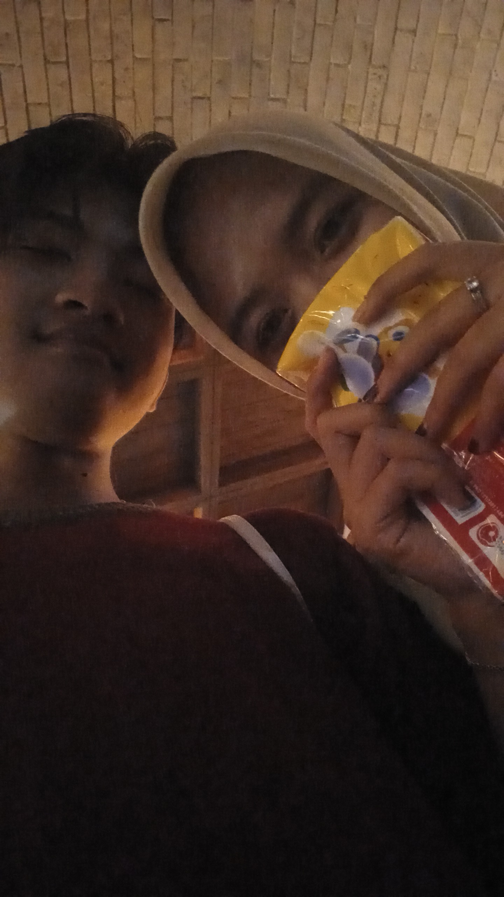
ANJAII FOTO PERTAMA KITA BERDUA😍
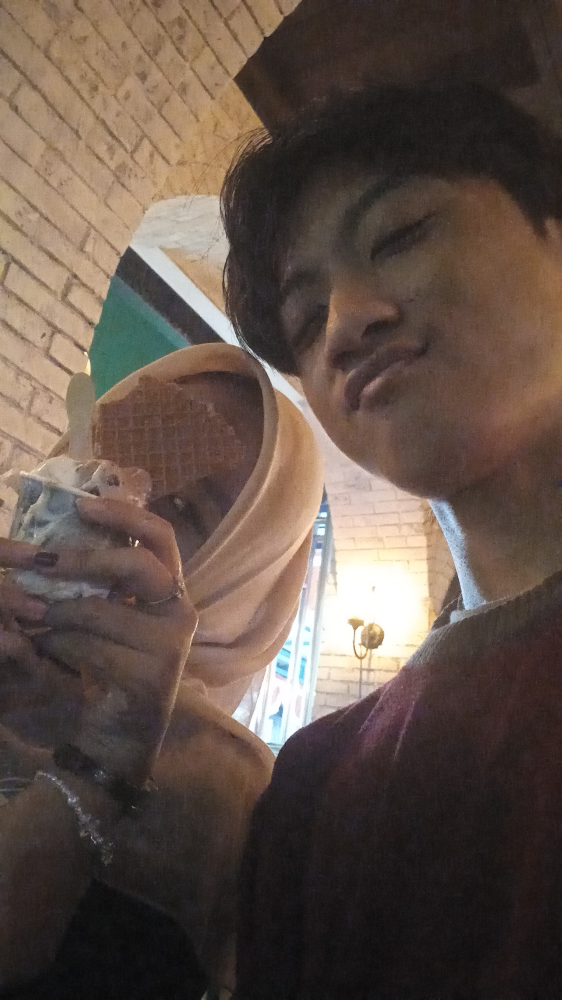
ESKRIM DATE YEYEYY😘
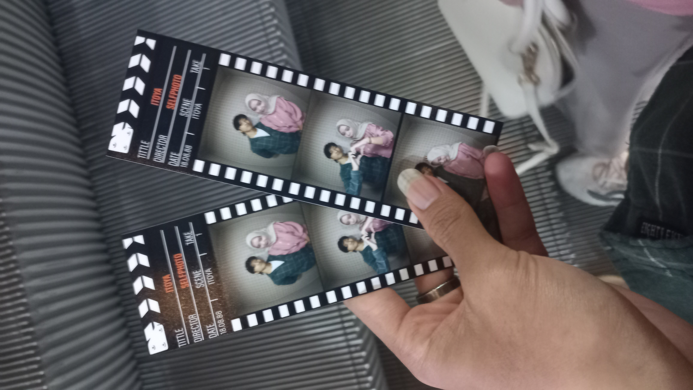
PHOTOOBOOT PERTAMA KITA🥰
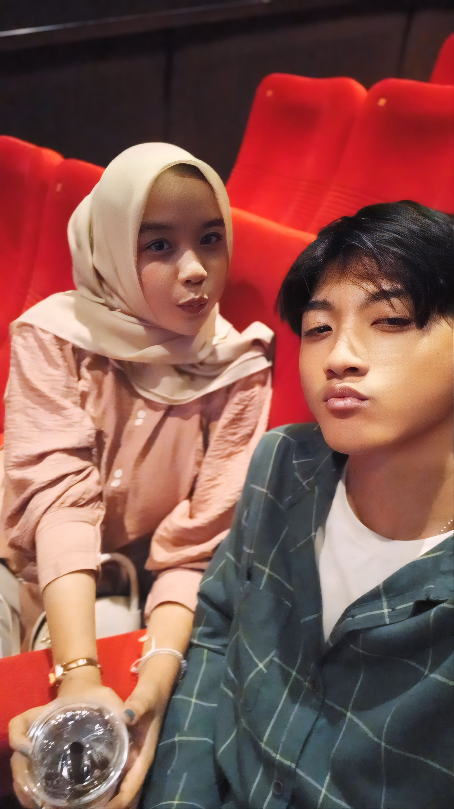
FIRST TIME BIOSKOP DATE KITA🥰
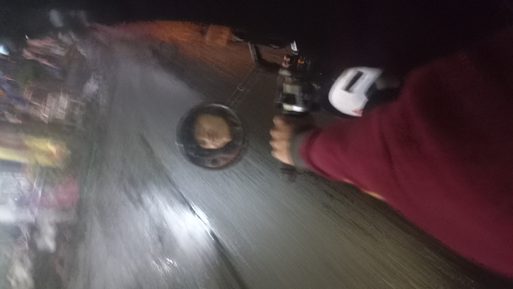
MOMEN RINDU DAN LUCU DIJALAN❤️
MOMEN-MOMEN WAKTU VC KITA BERDUA🥇
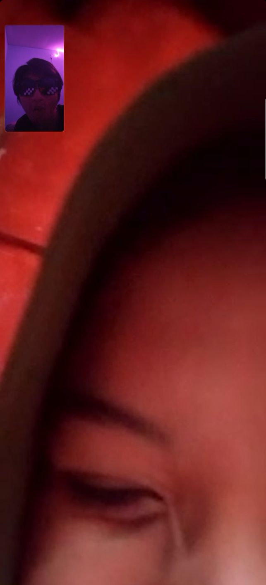
VC PERTAMA KITA WAKTU LDR HUAAA OMAYGATT
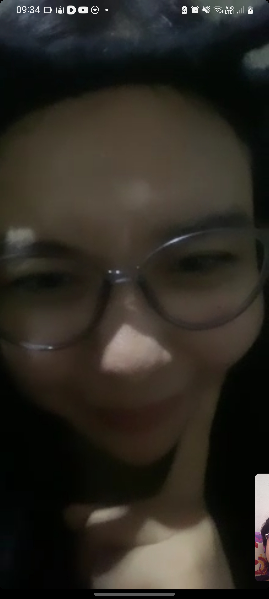
CISSS UTUTUTUUU🥰
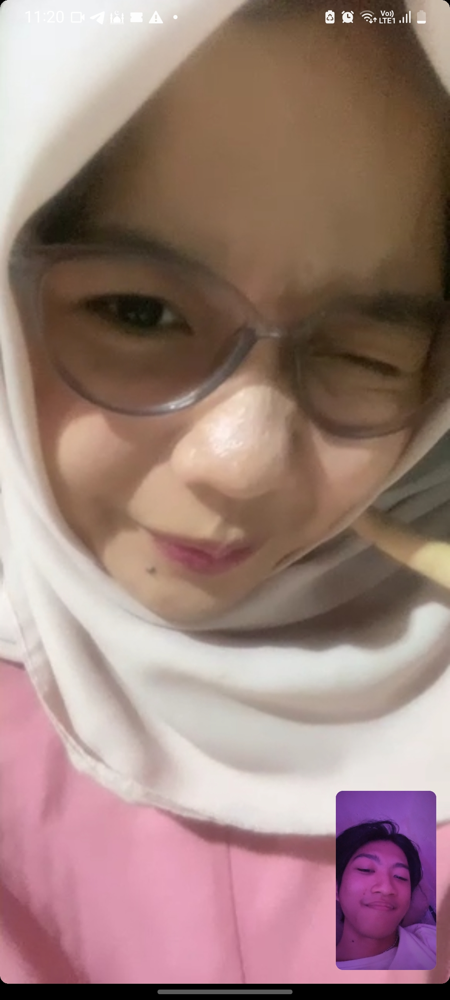
MANISSSNYAA HUAAAA😍❤️
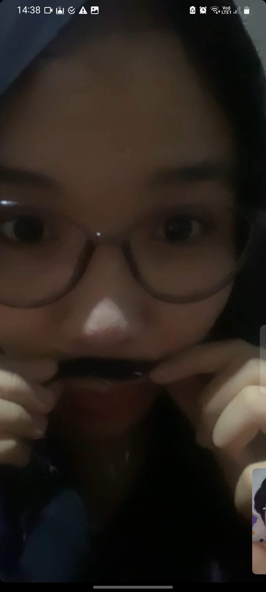
HOHOHOHOOOOO🎅
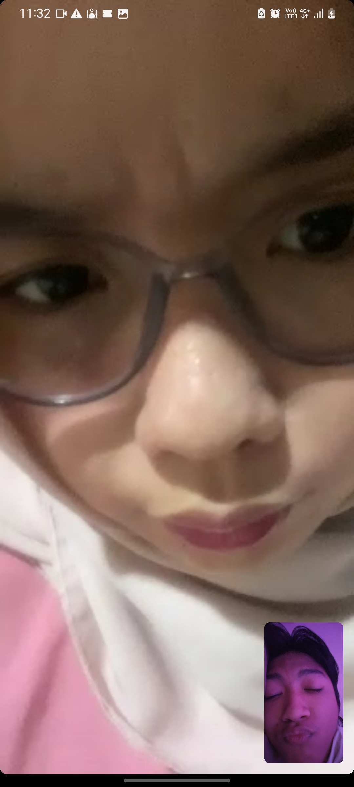
IHH SEREMNYOO MARAHH😱
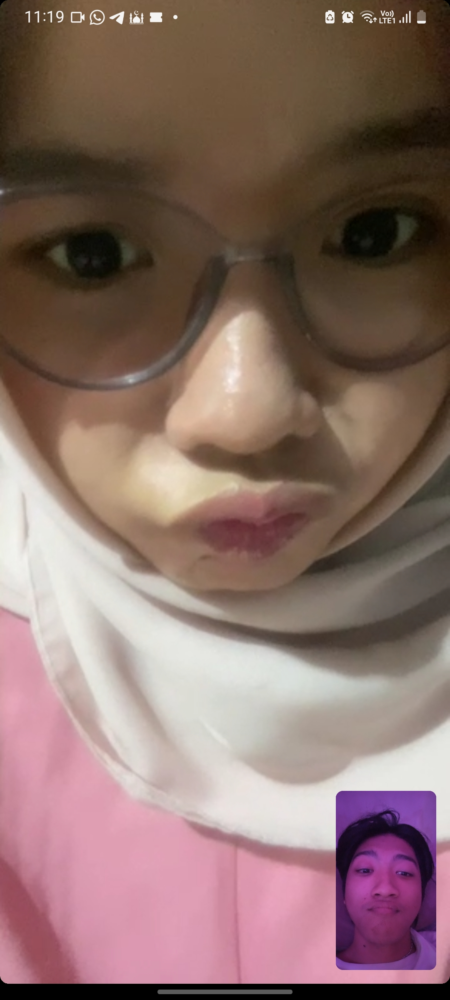
GEMESSNYOOO CEMONGG CEMONGG HUAA TIUMM TIUMMM😘❤️
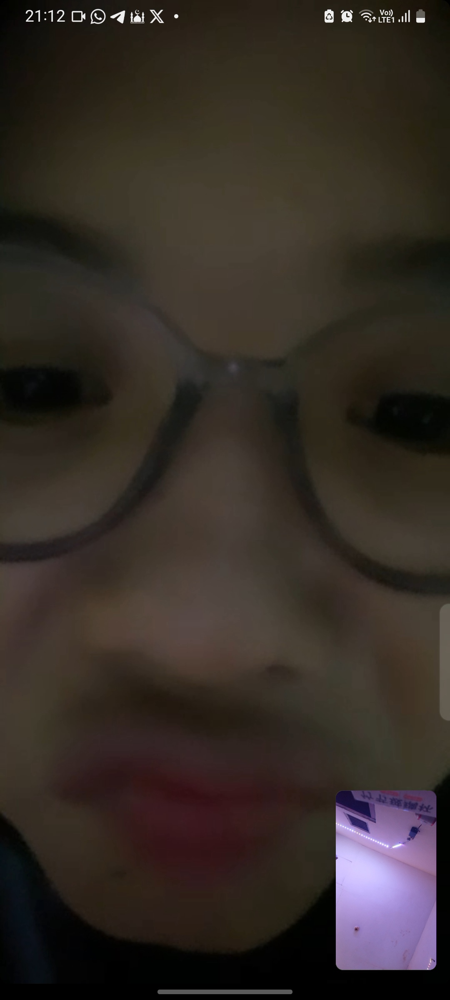
GEMESSNYOOO CEMONGG CEMONGG HUAA TIUMM TIUMMM😘❤️
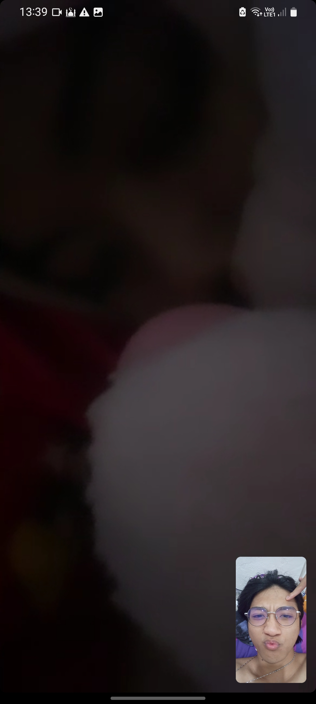
IHHH ADA YANG BOBOO OMAYGATTT GEMESSNYEEE PELUK BONEKAA🥰❤️
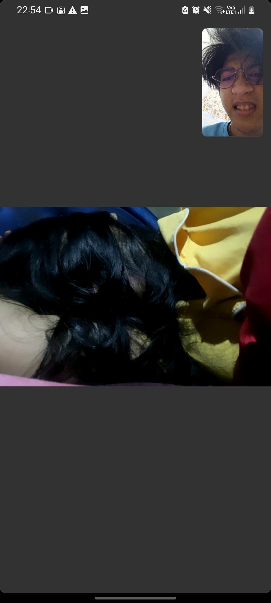
IHHH ADA YANG BOBOONYAA SEREMM BANGETTT😱😱
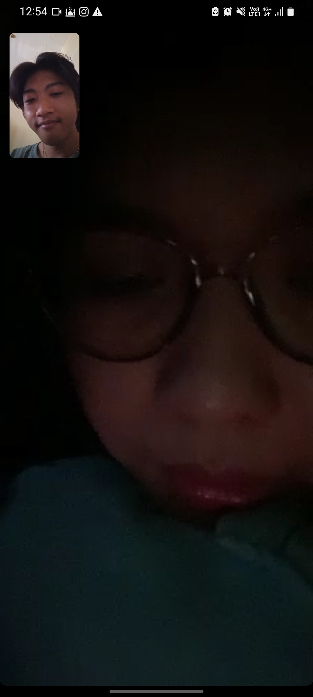
UTUTUTUUU ADA YANG BOBOO DI ATAS BANTAL KARENA NUNGGUIN LAMAA GEMESSNYEEE😍🥰❤️
UTUTUTUUU INII JUGA HABIS SHOLAT DAN MASS NYANYIIN SAMBIL GITARANNN EHH KETIDURANN GEMESSNYEEE😍🥰❤️
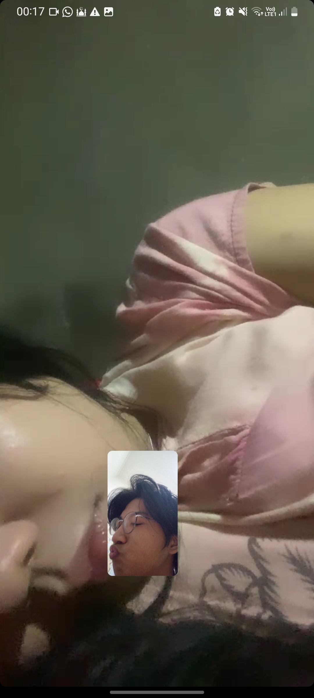
IHHH INI ADA YANG BOBOO KENA CIUMM OMAYGATTT GEMESSNYEEE MWEHEHEE😍🥰❤️
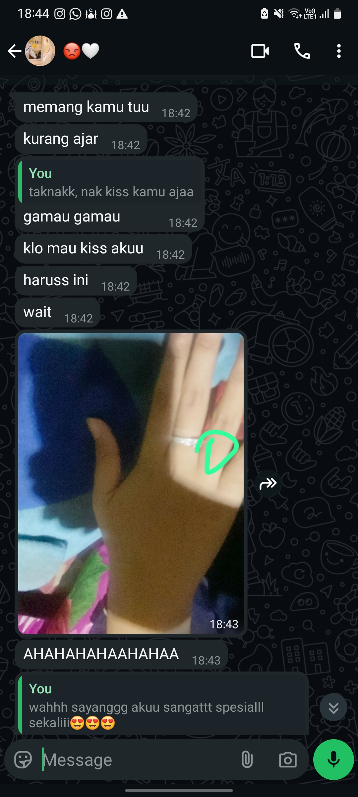
DAN INI LAH BUKTI DAN ALASAN AKU MEMPERJUANGKAN SAYANGG😘💍❤️
Chapter 04 · A little reminder
10 reasons I choose you.
♡
01 · Your presence
Kamu membuat hari-hari aku yang biasa terasa lebih berarti.
☁
02 · Your stories
Aku suka mendengar semua cerita apapun itu aku suka, bahkan yang paling sederhana.
☺
03 · Your smile
Senyuman manis mu selalu punya cara untuk membuat aku ikut bahagia dan makin jatuh cinta.
♡
04 · Your patience
Terima kasih sudah belajar untuk selalu sabar menjalani hubungan LDR ini dan sikap aku yang sangat menyebalkan.
✿
05 · Your kindness
Aku menghargai semua kebaikan dan perhatian yang kamu berikan besar maupun kecil.
★
06 · Our silly moments
Bersama kamu, hal receh pun bisa jadi sebuah kenangan yang sangat berarti.
∞
07 · Your honesty
Aku ingin kita selalu bisa bicara dengan jujur dan terbuka satu sama lain.
♡
08 · Your effort
Tak usah diragukan lagi. Aku melihat usaha yang kamu berikan untuk hubungan ini SANGAT SANGAT EFFORT.
🌷
09 · Our growth
Kedepannyaa dan seterusnya kita tetap terus belajar menjadi pasangan yang lebih baik.
∞
10 · Simply you
Bukan karena kamu sempurna, tetapi karena aku ingin terus mengenal dan memilihmu❤️
Bonus · Penghargaan
Anniversary Awards.
Dengan ini diumumkan para pemenang tahun ini.
😘
Pacar Paling Manja
Manjanya sampai bikin pengen aku manjain teruss.
🎖️
Paling Perhatian
Pokok PALING THE BEST
🤡
Si Paling Bercanda
Kadang garing, tapi aku pun tetap ketawa🥰
🕰️
Penyabar Beda Jam Online
Kita berdua menang!
🥰
Paling Kangenin
BIKIN KANGENIN TERUS EMANG!!!
🥇🏆
MY NUMBER ONE!!!
POKOK PACAR PALING TOP MARKOTOP, TERBAIKK, TERCANTIKK, TERMANISSS, TERIMUTTT, TERGEMESSS, TERGACORRR, TERADUHAII, TERMANTAPPP, TERHOTTT❤️❤️❤️
Chapter 05 · Play with me
The little love challenge.
GAME 1 · HOW WELL DO YOU KNOW US?
Mainkan bergantian. Pilih jawaban yang menurut kalian paling tepat. Ini kuis seru, bukan ujian cinta ya. 😆
Pertanyaan 1 / 5Skor: 0
🎉
0 / 5
GAME 2 · TRUTH OR DARE
Truth 💬
Tekan tombol untuk mengambil kartu.
GAME 3 · WHO IS MORE LIKELY TO?
Kalian masing-masing memilih tanpa saling bocorin dulu. Kalau pilihannya sama, berarti kalian kompak! 😆
Pertanyaan 1 / 8Kompak: 0
Abdul pilih:
Dela pilih:
🥰
0 / 8
Bonus · Janji
3 janji untuk 3 tahun.
Bukan janji manis. Janji yang akan kutagih sendiri ke diriku.
Aku tetap memperjuangkanmu. Di hari baik atau hari capek, jarak bukan alasan menyerah.
Aku jujur dan hadir. Kalau sibuk, aku bilang. Kalau rindu, aku bilang juga.
Aku jalan terus ke arahmu. Sampai kita nggak perlu lagi bilang “nanti kita ketemu”.
TOMBOL SAYANGG
Tekan, ya.
Chapter 06 · From Abdul to Dela
A letter for my sayangg.
Untuk Dela, sayanggku.
Happy anniversary yang ke-3 Tahun, sayanggkuuu cintaakuu❤️
Kalau dipikir-pikir, lucu juga yaa ternyata bagaimana awal mulainya kita. Ketemu di bot Anonymous Telegram, tempat dua orang yang awalnya tidak saling mengenal bisa bertukar cerita. Aku tidak pernah menyangka percakapan itu akan membawaku kepada seseorang yang begitu berarti dalam duniaku.
Dari chat yang panjang, dari hari-hari saling mengenal, sampai akhirnya pada 11 November 2023 kita memutuskan untuk bersama. Lalu Desember 2024 menjadi salah satu momen yang tidak akan aku lupakan: hari ketika kita akhirnya bertemu secara langsung untuk pertama kalinya.
Setelah itu, jarak kembali menjadi bagian dari perjalanan kita. Aku tahu LDR tidak selalu mudah. Ada rindu yang tidak bisa langsung dipeluk, ada cerita yang hanya bisa dibagikan lewat layar, dan ada hari-hari ketika kita sama-sama ingin berada lebih dekat.
Sayangg, aku ingin kamu tahu betapa aku menyayangi dan mencintaimu. Aku menghargai keberadaanmu, perhatianmu, waktu yang kamu berikan, dan setiap usaha yang kita lakukan untuk menjaga hubungan ini.
Aku tidak ingin hanya menjadi seseorang yang pandai mengucapkan kata-kata manis. Aku ingin terus belajar membuktikan cinta lewat sikap: mendengarkanmu, menghargai perasaanmu, memperbaiki kesalahan, dan tetap berusaha membangun hubungan yang sehat bersama.
Aku tidak bisa menjanjikan bahwa semuanya akan selalu mudah. Tapi aku ingin kita selalu punya keberanian untuk berbicara, saling memahami, dan menyelesaikan masalah sebagai satu tim.
Masih banyak hal yang ingin aku lakukan bersamamu. Makan berdua tanpa layar, jalan-jalan, mengambil foto bersama, merayakan hari-hari kecil, dan tentu saja mengganti semua pelukan yang tertunda.
Terima kasih sudah menjadi bagian dari ceritaku, Ratu Ardila, S.Ak . Dari sebuah sapaan anonim, menjadi seseorang yang begitu aku kenal dan sayangi.
Selamat tiga tahun untuk kita, sayanggkuu❤️❤️
Aku masih ingin mengenalmu lebih jauh, menertawakan hal-hal receh bersamamu, dan menulis banyak bab dan cerita berikutnya denganmu🥰😘.
With love,
ABDUL TERCINTAA❤️
Chapter 07 · The chapters ahead
Things I still want to do with you.
Pilih impian yang ingin kalian wujudkan. Tambahkan ide kalian sendiri juga.
A little secret for you
There's one more thing, Honeyy...
Ada satu pesan yang aku simpan khusus untukmu. Masukkan kode rahasia untuk membukanya.
Petunjuk: Awal Mula Semua Ini.
For my sayangg, Dela ❤️
Kalau aku bisa kembali ke hari ketika kita pertama kali kita bertemu di Anonymous, aku tetap ingin menyapamu. Bukan karena aku tahu semua hal indah akan terjadi, tetapi karena sekarang aku tahu betapa berharganya perjalanan yang dimulai dari sapaan sederhana itu.
Terima kasih sudah menjadi bagian dari tiga tahun ini. MASSS SAYANGG BANGET SAMA ADEKK. Mari kita jaga cerita ini, hari demi hari mengukir cerita kita sampai tujuan kita bersama tercapai.

 Pertemuan Pertama Desember 2024❤️
Pertemuan Pertama Desember 2024❤️